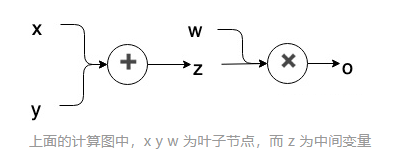

PyTorch快速教程
Pytorch加速训练合集|Pytorch apachecn中文教程|whl下载
基础用法¶
# 固定随机种子
torch.manual_seed(0)
torch.cuda.manual_seed_all(0)
# 指定GPU显卡
os.environ['CUDA_VISIBLE_DEVICES'] = '0,1'
# 数据类型
# torch.FloatTensor() 32位浮点型 默认 # torch.cuda.FloatTensor()
# torch.DoubleTensor() 64位浮点型
# torch.ShortTensor() 16位整型
# torch.IntTensor() 32位整型
# torch.LongTensor() 64位整型
# 补充1，转换Tensor的数据类型 比如 a是IntTensor类型，只需要 a.float() 就可以转为FloatTensor类型
tensor = tensor.float()
tensor = tensor.long()
# 设置全局默认tensor数据类型
torch.set_default_tensor_type('torch.DoubleTensor')
# 创建tensor
t.Tensor(*sizes) # 创建tensor时，系统不会马上分配空间，只是会计算剩余的内存是否足够使用，使用到tensor时才会分配
torch.Tensor(arr) == torch.tensor(arr) # 基础构造函数
# 而下面的其它操作都是在创建完tensor之后马上进行空间分配。例如:torch.ones(2,3)
# 下面的这些创建方法都可以在创建的时候指定数据类型dtype和存放device(cpu/gpu).例如:t.randn(2, 3,device=t.device('cpu'))
torch.ones(2,2) # 全1Tensor 参数:*size
torch.zeros((3,2)) # 全零的Tensor 参数:*size
torch.eye(*size)# 对角线为1，其他为0
torch.arange(s,e,step)# 从s到e,范围[s,e)，步长为step
torch.linspace(s,e,steps)# 从s到e,范围[s,e],均匀切分成steps份
torch.rand(*size)/torch.randn(*size)#均匀/标准分布
torch.normal(mean,std) # 正态分布
torch.uniform(from,to) # 均匀分布
torch.randperm(n) # 随机排列,integers:[0,n-1],这些整数随机排列
# torch.*_like(tensora) 可以生成和tensora拥有同样属性(类型，形状，cpu/gpu)的新tensor。
torch.zeros_like(a) #等价于t.zeros(a.shape,dtype=a.dtype,device=a.device)
torch.zeros_like(a, dtype=t.int16) #可以修改某些属性
torch.rand_like(a) # 和a属性一样，就是值不同
# tensor.new_*(new_shape) 新建一个不同形状的tensor，属性啥的相同
a.new_ones(4,5, dtype=t.int)
a.new_tensor([3,4])
# 常用属性
tensor_a.shape == tensor_a.size() # 也是返回torch.Size对象 等价于tensor_a.size()
tensor_a.item() # 可以获得Tensor的数值，而不是Tensor，而tensor_a[0]得到的还是tensor,只不过是0-dim，当然tensor_a[0].item()也可以，现在已经不是用[0]来获取值了
tensor_a.tolist() # 把tensor转为list
tensor_a.type() # Tensor的数据类型
tensor_a.dim() # Tensor的维度信息
tensor_a.numel() # Tensor中元素个数总数 等价于tensor_a.nelement()
# 常用方法
# 矩阵计算
torch.mm(tensor1, tensor2) # (m*n) * (n*p) -> (m*p).
torch.bmm(tensor1, tensor2) # (b*m*n) * (b*n*p) -> (b*m*p).
torch.addmm/addbmm/addmv/addr/baddbmm
tensor1 * tensor2 # Element-wise multiplication.
torch.dot/cross #内积/外积
torch.inverse #求逆矩阵
torch.svd #奇异值分解
tensor_a.t # 转置
# 需要注意的是，矩阵的转置会导致存储空间不连续，需调用它的.contiguous方法将其转为连续
tensor_a.t().contiguous() # 判断: tensor_a.t().is_contiguous()返回False，转过之后连续
# 逐元素操作
torch.add(x,y) # x+y 也可以 当然 x.add_(y) # 不返回值，直接对x修改,下面的都可以加_,例:x.squeeze_(0)
torch.mean(x) # 求均值
torch.matmul(x,y) # 矩阵乘法,也可以用 torch.mm(x,y)
torch.clamp(x, min, max)# 截断:小于min的设置为min，大于max的设置为max
# torch.abs/sqrt/div/exp/fmod/log/pow.. 绝对值/平方根/除法/指数/求余/求幂..
# torch.cos/sin/asin/atan2/cosh.. 相关三角函数
# torch.ceil/round/floor/trunc 上取整/四舍五入/下取整/只保留整数部分
# torch.sigmod/tanh.. 激活函数
# 总结经验:下面的函数大多都有两个属性: dim=0/1/..表示维度 keepdim=True会保留维度1 例如:输入(m,n,k)->dim=0->输出(1, n, k)或者(n, k)
# mean/sum/median/mode 均值/和/中位数/众数
# norm/dist 范数/距离
# std/var 标准差/方差
# cumsum/cumprod 累加/累乘(特殊)
tensor_a.cumsum(dim=1) # 沿着行进行累加，注意是使各行之间没联系，各加各的
values,indexs = torch.topk(torch.arange(10),k) # 计算前topk个元素，返回值+索引
torch.max(tensor_a,[dim])/torch.max(tensor_a,tensor_b)# 大小
max_value,max_idx = torch.max(tensor_a,dim=1)
#判断大小
tensor_a>1 # 返回一个ByteTensor,大于1的值为1，小于1的值为0
tensor_a[tensor_a>1] # 返回tensor_a中大于1的tensor值 等价于tensor_a.masked_select(a>1)
torch.index_select(input, dim, index)# 在指定维度dim上选取，比如选取某些行、某些列
torch.masked_select(input, mask)# 例子如上，a[a>0]，使用ByteTensor进行选取
torch.non_zero(input)# 非0元素的下标
torch.gather(input, dim, index)# 根据index，在dim维度上选取数据，输出的size与index一样
# gather是一个比较复杂的操作，对一个2维tensor，输出的每个元素如下：
# out[i][j] = input[index[i][j]][j] # dim=0
# out[i][j] = input[i][index[i][j]] # dim=1
# 举例子：torch.arange(0,16).view(4,4).gather(0,torch.LongTensor([[0,1,2,3]])) # 取正对角线元素
# gather相对应的逆操作是scatter_，gather把数据从input中按index取出，而scatter_是把取出的数据再放回去。注意scatter_函数是inplace操作。
out = input.gather(dim, index)
#-->近似逆操作
out = Tensor()
out.scatter_(dim, index)
# 操作维度
# 重点，增加维度unsqueeze,减少维度squeeze,维度重排 permute，维度交换 transpose, Tensor的reshape操作==tensor_a.view 0维是y轴，1维是x轴
None类似于np.newaxis, 为a新增了一个轴# tensor_a.shape:(3,4) -> tensor_a[None].shape:(1,3,4) 因为等价于 a[None,:,:]
tensor_a.unsqueeze(0) # 在第一维度增加 参数是dim:0开始 (4,3) -> (1,4,3) 等价于 tensor_a[None,:] ,负数维度表示倒数的维度
tensor_a.squeeze(0) # 减少第一维度 参数是dim:0开始 (1,4,3) -> (4,3)
tensor_a.squeeze() # 没有参数 将 tensor 中所有的一维全部都去掉 (1,1,4,3) -> (4,3)
tensor_a.expand(*size) # 扩大张量(重复),不会占用额外空间，只会在需要的时候才扩充，可极大节省内存
torch.reshape(tensor, (64, 512, 1, 1)).expand(64, 512, 7, 7) # # 张量扩展 Expand tensor of shape 64*512 to shape 64*512*7*7.
tensor_a.permute(1,0,2) # 维度重新排列 (3,4,5) -> (4,3,5)
tensor_a.transpose(0,2) # 维度交换 (3,4,5) -> (5,4,3)
tensor_a.view(-1,5) # Tensor reshape (3,4,5) -> (12,5)
torch.reshape(tensor, shape) # torch.reshape 可以自动处理输入张量不连续的情况
# 如果新大小超过了原大小，会自动分配新的内存空间，而如果新大小小于原大小，则之前的数据依旧会被保存,但是只显示size大小的数据
tensor_a.resize_() # 与view不同，它可以修改tensor的大小
# 张量拼接，torch.cat会沿着指定维度拼接，torch.stack会增加一维
# 例如当参数是 3 个 10×5 的张量，torch.cat 的结果是 30×5 的张量，而 torch.stack 的结果是 3×10×5 的张量
torch.cat(seq,dim=0,out=None)# 在指定维度上拼接张量,维度不会增加，只会在某一维度进行拼接
torch.stack((Tensor),dim)# 会增加一个维度 a:(3,3),b:(3,3),torch.stack([a,b],0)->shape:(2,3,3),toch.stack([a,b],1)->shape:(3,2,3)
# tensor切片
a[0:1,:2] # 第0行，前两列 tensor([[-0.1855, -0.4570]])
a[0,:2] # 注意两者的区别：形状不同 tensor([-0.1855, -0.4570])
# 高级索引 前提:x.shape->(3,3,3)
x[[1, 2], [1, 2], [2, 0]] # x[1,1,2]和x[2,2,0]
x[[2, 1, 0], [0], [1]] # x[2,0,1],x[1,0,1],x[0,0,1]
x[[0, 2], ...] # x[0] 和 x[2]
# 张量复制
tensor.clone() # memory:new,still in graph:yes
tensor.detach()# memory:shared,still in graph:no
tensor.detach().clone()# memory:new,still in graph:no
# numpy & tensor
tensor_var.numpy() # CPU:tensor->numpy,GPU时:tensor_var.cpu().numpy()
torch.from_numpy(tensor_var) # numpy->tensor
# 求导，三变量
# x.data -> Variable 变为Tensor
# x.grad -> Variable的梯度
# x.grad_fn -> Variable的梯度函数
tensor_a.backward(parameters) # 反向传播函数:接受的参数parameters必须要和tensor_a的大小一模一样,然后作为tensor_a的系数传回去
# 举例子
tensor_a.backward(torch.ones(tensor_a.size()))
# 注意：grad在反向传播过程中是累加的(accumulated)，这意味着每一次运行反向传播，梯度都会累加之前的梯度，所以反向传播之前需把梯度清零。
tensor_a.grad.data.zero_() # 以下划线结束的函数是inplace操作，会修改自身的值，就像add_
# pytorch使用GPU model = Net()
device = torch.device("cpu"/"cuda:x")
device = t.device("cuda:0" if t.cuda.is_available() else "cpu")
model.to(device) # 等价于 net = net.to(device)
images = images.to(device)
labels = labels.to(device)
Pytorch数据加载与处理¶
重写数据加载:torch.utils.data.Dataset,必须继承这个类，并且重写两个方法
__getitem__：返回一条数据，或一个样本。obj[index]等价于obj.__getitem__(index)__len__：返回样本的数量。len(obj)等价于obj.__len__()
# 方法一:继承data.Dataset
class DogCat(data.Dataset): # 必须继承data.Dataset类
def __init__(self,root,transforms=None):# root是指根目录,加入预处理
imgs = os.listdir(root)
#指定路径，方便在__getitem__方法中读取图片 用列表是方便索引
self.imgs = [os.path.join(root,img) for img in imgs]
self.transforms = transforms
def __getitem__(self,index):
img_path = self.imgs[index]
# dog->1,cat->0
label = 1 if 'dog' in img_path.split('/')[-1].split('.')[0] else 0
data = Image.open(img_path)
if self.transforms: # 执行预处理操作
data = self.transforms(data)
else:
array = np.asarray(data)
data = torch.from_numpy(array)
return data,label
def __len__(self):
return len(self.imgs)
# 图像增强
from torchvision import transforms as T
transform = T.Compose([
T.Resize(224), # 缩放图片(Image)，保持长宽比不变，最短边为224像素
T.CenterCrop(224), # 从图片中间切出224*224的图片
T.ToTensor(),# 将图片(Image)转成Tensor，归一化至[0, 1]
T.Normalize(mean=[.5,.5,.5],std=[.5,.5,.5]) # 标准化至[-1, 1]，规定均值和标准差
])
dataset = DogCat("./dogs-vs-cats/train/",transforms=transform)
img,label = dataset[0]
print(img.shape,label)# torch.Size([3, 224, 224]) 1
ImageFolder
# 读取分类的目录结构
DogCat
|-cat/ # 因为ImageFolder定义的类名是从0开始的，一般建议直接把目录名改为从0开始
|-cat0.jpg
...
|-dog
|-dog0.jpg
...
# 一个方法:
torchvision.datasets.ImageFolder(
root,# 在root指定的路径下寻找图片
transform=None,# 图像增强
target_transform=None,# 对label转换
loader=<function default_loader at 0x11ed2b560>, # 给定路径后如何读取图片，默认读取为RGB格式的PIL Image对象
is_valid_file=None,
)
# 三个变量
self.classes # 用一个list保存 类名
self.class_to_idx # {类名:类序号(从0开始)}->{'cat': 0, 'dog': 1}
self.imgs # [(imgpath1,0),(imgpath2,0),(imgpath3,1)...]
# ImageFolder的返回值，dataset
dataset[0] # 第一维度是第几张图，返回一个包含(图片对象，label)的对象,如果没有transform，返回的还是PIL
dataset[0][0] # 图片对象
dataset[0][1] # label
# 一个小例子
normalize = transforms.Normalize(mean=[0.4, 0.4, 0.4], std=[0.2, 0.2, 0.2])
transform = transforms.Compose([
transforms.RandomResizedCrop(224),
transforms.RandomHorizontalFlip(),
transforms.ToTensor(),
normalize,
])
dataset = ImageFolder('DogCat/', transform=transform)
dataset[0][0].shape # CxHxW
# 看看图片
to_img = transforms.ToPILImage()
# 0.2和0.4是标准差和均值的近似
to_img(dataset[0][0]*0.2+0.4) # 会显示图片
Dataset
# 上面的两种方式，一次只会返回一个(img,label),训练的时候一般是batch，所以
torch.utils.data.DataLoader(
dataset, # 上面方式的返回值
batch_size=1,
shuffle=False,
sampler=None, # 样本抽样
batch_sampler=None,
num_workers=0, # 多进程
collate_fn=None, # 将若干图片拼接为一个batch的数据拼接方式，可以自定义
pin_memory=False,# 是否将数据保存在pin memory区，pin memory中的数据转到GPU会快一些
drop_last=False,
timeout=0,
worker_init_fn=None,
multiprocessing_context=None,
)
# 小例子
from torch.utils.data import DataLoader # 导入包，注意位置
dataloader = DataLoader(dataset, batch_size=32, shuffle=True, num_workers=0, drop_last=False)
# 注意:dataloader返回的是个可迭代的对象，每个迭代对象包含batch_size个样本
dataiter = iter(dataloader)
imgs,labels = next(dataiter) # batch_size个
imgs.shape # torch.Size([32, 3, 224, 224])
补充:collate_fn函数
# 自定义这个函数可以实现任何你想要的输出
def custom_collate(batch):
'''
图像识别:这个batch是一个list，长度是batch_size，里面的元素是self.__getitem__(index)得到的元素:[(img1,label1),(img2,label2)]
目标检测:这个batch可能是:[{'image': img, 'bboxes': bbox, 'category_id': labels},....]
总结:这个list里面是什么内容，取决于 self.__getitem__(index) return的是什么元素
'''
# 下面以图像识别返回的[img,label]进行改写
batch.sort(key=lambda x: len(x[1]), reverse=True) # 先按label长度进行排序
img, label = zip(*batch)
pad_label = []
lens = []
max_len = len(label[0])
# 进行长度的pad
for i in range(len(label)):
temp_label = [0] * max_len
temp_label[:len(label[i])] = label[i]
pad_label.append(temp_label)
lens.append(len(label[i]))
return img, pad_label, lens # [img,label,label_len]
采样器Sample¶
采样Sample介绍:torch.utils.data.sampler.xx，注意，每个取样器返回的都是样本在dataset中的索引，并不是样本本身
# 1.SequentialSampler(data_source) # 顺序采样，只有一个参数dataset。返回以一个与数据集等长的迭代器
# 2.RandomSampler(data_source,replacement=False,num_samples=None) # 随机采样
# 2.1 data_source (Dataset) – dataset to sample from
# 2.2 replacement (bool) 放回/不放回采样，默认不放回
# 2.3 num_samples (python:int) – default=`len(dataset)`.replacement=True时使用；默认是选择所有数据，当放回采样时可以设定随机选取多少个数据。
# 3.WeightedRandomSampler(weights,num_samples,replacement=True)
# 3.1 weights (sequence)赋予每个样本权重。代表取到该样例的概率。数据不均衡时可以用来控制不同类别样本的采样权重
# 3.2 num_samples (python:int) – number of samples to draw
# 3.2 replacement (bool) – if True, samples are drawn with replacement. If not, they are drawn without replacement, which means that when a sample index is drawn for a row, it cannot be drawn again for that row.
# final 配合DataLoader一起使用
sample = torch.utils.data.sampler.xx # 加这一步是为了取样，例如数据是20，可以先取样10，如果batch_size=2，那么dataloader的len是5
daloloader = torch.utils.data.DataLoader(data,batch_size=2,sampler=sample)
模型多卡训练¶
Pytorch神经网络模块¶
# 简单概述一下
import torch.nn.functional as F
from torch import nn
# 进入神经网络，不得不提 nn.Parameter 和Variable类似，但是默认是求梯度的
w = nn.Parameter(torch.randn(2,1)) # 这是nn.Parameter变量w
b = nn.Parameter(torch.zeros(1)) # 这是nn.Parameter变量 b
# 神经网络中常用的参数
F.sigmoid(x) # 求x的sigmoid函数
F.tanh(x) # tanh函数
F.relu(x)
# 卷积层,输入的shape=(N,C,H,W) 输出相同shape
torch.nn.Conv2d(
in_channels, # int
out_channels, # int
kernel_size,# int or tuple
stride=1, # int or tuple
padding=0, # int or tuple,输入的每一条边补充0的层数
dilation=1, # int or tuple，空洞卷积，卷积核元素之间的间距
groups=1, # int 从输入通道到输出通道的阻塞连接数
bias=True,# bool
padding_mode='zeros',
)
# BN层,输入的shape=(N,C,H,W) 输出相同shape
torch.nn.BatchNorm2d(
num_features, # 输入特征图(N,C,H,W)中的C
eps=1e-05,# 为保证数值稳定性（分母不能趋近或取0）,给分母加上的值。默认为1e-5
momentum=0.1,# 动态均值和动态方差所使用的动量。默认为0.1
affine=True,#是否需要仿射:如果False,那么gamma=1,beta=0,且不会被学习
track_running_stats=True, # # track_running_stats=True表示跟踪整个训练过程中的batch的统计特性，得到方差和均值，而不只是仅仅依赖与当前输入的batch的统计特性。相反的，如果track_running_stats=False那么就只是计算当前输入的batch的统计特性中的均值和方差了。当在推理阶段的时候，如果track_running_stats=False，此时如果batch_size比较小，那么其统计特性就会和全局统计特性有着较大偏差，可能导致糟糕的效果。
)
# 池化层,输入的shape=(N,C,H,W) 输出相同shape
torch.nn.MaxPool2d(
kernel_size, # max pooling 的窗口大小
stride=None, # 移动步长，默认是kernel_size
padding=0, # 输入的每一条边填充0的层数
dilation=1, # 控制窗口中元素步幅
return_indices=False, # True,会返回输出最大值的序号，对于上采样操作会有帮助
ceil_mode=False # 如果等于True，计算输出信号大小的时候，会使用向上取整，代替默认的向下取整的操作
)
torch.nn.AvgPool2d(
kernel_size, # 池化窗口大小
stride=None, # 移动步长
padding=0, # 输入的每一条边补充0的层数
dilation=1,# 一个控制窗口中元素步幅的参数
ceil_mode=False,
count_include_pad=True)
# 全局平均池化层
torch.nn.AdaptiveMaxPool2d(
output_size, # 输出尺寸，可以用（H,W）表示H*W的输出，也可以使用数字H表示H*H大小的输出
return_indices=False)# 如果设置为True，会返回输出的索引
# 图片上采样
torch.nn.functional.interpolate(
input, # 输入
size=None,
scale_factor=None, # 放大的倍数
mode='nearest', # "nearest"/"area"/"linear"
align_corners=None,
)
# 转置卷积
# 对于每一条边输入输出的尺寸的公式如下:output = (input-1)*stride+outputpadding-2*padding+kernelsize
torch.nn.ConvTranspose2d(
in_channels, # int
out_channels, # int
kernel_size, # int or tuple
stride=1, # int or tuple,将要输入扩大的倍数
padding=0, # int or tuple，输入的每一条边补充0的层数，高宽都增加2*padding
output_padding=0,# int or tuple，输出边补充0的层数，高宽都增加padding
groups=1,# int 从输入通道到输出通道的阻塞连接数
bias=True,# bool
dilation=1,# int or tuple,卷积核元素之间的间距
padding_mode='zeros',
)
# 全连接层
torch.nn.Linear(
in_features,
out_features,
bias=True
)
# Dropout,以一定的概率闭合神经元
torch.nn.Dropout(
p=0.5,
inplace=False
)
# 激活函数
torch.nn.Sigmoid()
torch.nn.Tanh()
torch.nn.Softmax()
# ReLU激活:inplace如果设为True，它会把输出直接覆盖到输入中，这样可以节省内存/显存
torch.nn.ReLU(inplace) # inplace默认为False,ReLU函数有个inplace参数，如果设为True,它会把输出直接覆盖到输入中，这样可以节省内反向传播的梯度。但是只有少数的autograd
# f(x) = max(0,x)+negative_slope*min(0,x) negative_slope：控制负斜率的角度
torch.nn.LeakyReLU(negative_slope=0.01,inplace=False)
torch.nn.ReLU6(inplace) #ReLU6(x) = min(max(0,x), 6)
torch.nn.Threshold(threshold, value, inplace=False) #阈值。输入值小于阈值则会被value代替
Pytorch搭建网络¶
# 搭建网络前必须先介绍一下pytorch的初始化
from torch.nn import init
torch.nn.init.xavier_uniform(seq_net[0].weight) # Xavier 初始化方法
import torch.nn as nn
from torch.nn import functional as F
# 方法一
class Net(nn.Module):# 继承nn.Module
def __init__(self):
super(Net, self).__init__()
self.conv1 = nn.Conv2d(3, 6, 5) # 里面必须是个类
self.conv2 = nn.Conv2d(6, 16, 5)
self.fc1 = nn.Linear(16 * 5 * 5, 120)
self.fc2 = nn.Linear(120, 84)
self.fc3 = nn.Linear(84, 10)
# 修改初始化
for m in self.modules():
if isinstance(m, torch.nn.Conv2d):
nn.init.kaiming_normal_(m.weight.detach())
m.bias.detach().zero_()
elif isinstance(m, torch.nn.Linear):
nn.init.kaiming_normal_(m.weight.detach())
m.bias.detach().zero_()
def forward(self, x): # 前项传播函数，backward函数就会自动调用
x = F.pool(F.relu(self.conv1(x)), 2)
x = F.pool(F.relu(self.conv2(x)), 2)
x = x.view(-1, 16 * 5 * 5)
x = F.relu(self.fc1(x))
x = F.relu(self.fc2(x))
x = self.fc3(x)
return x
# 方式二
seq_net = nn.Sequential(# 里面必须是个类
nn.Linear(2,4),
nn.Tanh(),
nn.Linear(4,1)
)
# 模型层的一些常用参数
seq_net[0] # 第一层，通过索引访问每一层，用其他两种有名字，也可以根据名字取
seq_net[0].weight # 第一层的权重的module
seq_net[0].weight.data # 第一层的权重
seq_net[0].bias # 第一层的bias的参数
# 方式三
net1 = nn.Sequential()
net1.add_module('conv', nn.Conv2d(3, 3, 3))
net1.add_module('batchnorm', nn.BatchNorm2d(3))
net1.add_module('activation_layer', nn.ReLU())
# 方式四
from collections import OrderedDict
net3= nn.Sequential(OrderedDict([
('conv1', nn.Conv2d(3, 3, 3)),
('bn1', nn.BatchNorm2d(3)),
('relu1', nn.ReLU())
]))
# 1.遍历每一层,net._modules.items()
net = Net()
for name,layer in net._modules.items():
print(name,layer) # conv1 Conv2d(3,6,kernel_size=(5,5),stride=(1,1))
net.conv1 # 直接通过名字访问某层
net.conv1.weight #打印该层权重module，torch.nn.parameter.Parameter对象
net.conv1.weight.data # 获取该层的权重值
net.conv1.weight.grad # 梯度
net.conv1.bias# 打印该层偏置
# 3.附加提取信息(可以看看)
# 3.1 net.modules() & net.named_modules() 返回的是所有的元素，包括不同级别的子元素，model->第一层由浅入深逐层遍历->第二层由浅入深逐层遍历->...->最后一层的外层->...->最后一层的最里面一层。
# 常用作下面的结构
for m in model.modules():
if isinstance(m, nn.Conv2d) or isinstance(m, nn.Linear):
pass
# 3.2 net.children() & net.named_children() 返回的是最外层的元素
# 3.3.模型的一些常用参数
model.parameters() # 获得模型的参数，这样在 torch.optim.SGD(param,0.1) 就可以用了,循环遍历的话每个参数其实就是 net.conv1.weight
# for name,parameters in net.named_parameters(): return 名字+参数
model.named_parameters() # 可同时返回可学习的参数及名称。例: conv1.weight:参数
model.zero_grad() # 所有参数的梯度清零
# 4.访问每一层的各个属性，包括batchnorm的running_mean/bn.running_var
# 返回的是一个字典，一般是存到.pth模型中的数据
for k,v in net.state_dict().items():
print(k,v.shape) # net.named_parames() 只访问weight/bias，batchnorm的runing_xx不能
# 5.ModuleList:可以像用list一样使用它，但不能直接把输入传给ModuleList
# 为什么不直接用List呢，干嘛多此一举呢这是因为ModuleList是Module的子类，当在Module中使用它的时候，就能自动识别为子module。
modellist = nn.ModuleList([
nn.Linear(3,4),
nn.ReLU(),
nn.Linear(4,2)
])
# output = modelist(input) 会报错,因为modellist没有实现forward方法
# 可以这样使用
input = t.randn(1, 3)
for model in modellist:
input = model(input)
# 6.ParameterList,类似ModuleList
self.params = nn.ParameterList([nn.Parameter(torch.randn(10, 10)) for i in range(10)])
Pytorch初始化的两种方式¶
from torch.nn import init
import torch.nn as nn
from torch.nn import functional as F
# 方式一，model.apply(func_name)：apply函数可以不断遍历model的各个模块。实际上其使用的是深度优先算法
class Net(nn.Module):# 继承nn.Module
def __init__(self):
super(Net, self).__init__()
self.conv1 = nn.Conv2d(3, 6, 5) # 里面必须是个类
self.conv2 = nn.Conv2d(6, 16, 5)
self.fc1 = nn.Linear(16 * 5 * 5, 120)
self.fc2 = nn.Linear(120, 84)
self.fc3 = nn.Linear(84, 10)
def forward(self, x): # 前项传播函数，backward函数就会自动调用
x = F.pool(F.relu(self.conv1(x)), 2)
x = F.pool(F.relu(self.conv2(x)), 2)
x = x.view(-1, 16 * 5 * 5)
x = F.relu(self.fc1(x))
x = F.relu(self.fc2(x))
x = self.fc3(x)
return x
# 1. 根据网络层的不同定义不同的初始化方式
def weight_init(m):
if isinstance(m, nn.Linear):
nn.init.xavier_normal_(m.weight)
nn.init.constant_(m.bias, 0)
# 也可以判断是否为conv2d，使用相应的初始化方式
elif isinstance(m, nn.Conv2d):
nn.init.kaiming_normal_(m.weight, mode='fan_out', nonlinearity='relu')
# 是否为批归一化层
elif isinstance(m, nn.BatchNorm2d):
nn.init.constant_(m.weight, 1)
nn.init.constant_(m.bias, 0)
# 2. 初始化网络结构
model = Net(in_dim, n_hidden_1, n_hidden_2, out_dim)
# 3. 将weight_init应用在子模块上
model.apply(weight_init)
# 方式二，利用self.modules()来进行循环
class Net(nn.Module):# 继承nn.Module
def __init__(self):
super(Net, self).__init__()
self.conv1 = nn.Conv2d(3, 6, 5) # 里面必须是个类
self.conv2 = nn.Conv2d(6, 16, 5)
self.fc1 = nn.Linear(16 * 5 * 5, 120)
self.fc2 = nn.Linear(120, 84)
self.fc3 = nn.Linear(84, 10)
# 修改初始化
for m in self.modules():
if isinstance(m, torch.nn.Conv2d):
nn.init.kaiming_normal_(m.weight.detach())
m.bias.detach().zero_()
elif isinstance(m, torch.nn.Linear):
nn.init.kaiming_normal_(m.weight.detach())
m.bias.detach().zero_()
def forward(self, x): # 前项传播函数，backward函数就会自动调用
x = F.pool(F.relu(self.conv1(x)), 2)
x = F.pool(F.relu(self.conv2(x)), 2)
x = x.view(-1, 16 * 5 * 5)
x = F.relu(self.fc1(x))
x = F.relu(self.fc2(x))
x = self.fc3(x)
return x
Pytorch的钩子函数hook¶
torch.autograd.Variable.register_hook (torch.tensor.register_hook）
torch.nn.Module.register_backward_hook (Python method, in torch.nn)
第一个是register_hook，是针对Variable对象的，后面的两个：register_backward_hook和register_forward_hook是针对nn.Module这个对象的。
利用它，我们可以**不必改变网络输入输出的结构，方便地获取、改变网络中间层变量的值和梯度**
pytorch痛点:中间变量的释放

- 在 PyTorch 的计算图（computation graph）中，只有叶子结点（leaf nodes）的变量会保留梯度。而所有中间变量的梯度只被用于反向传播，一旦完成反向传播，中间变量的梯度就将自动释放，从而节约内存。
# 1.自动求导机制中只保存叶子节点，下面计算中，也就是中间变量在计算完成梯度后会自动释放以节省空间，所以下面代码我们在计算过程中只得到了z对x的梯度。
In[2]: import torch
In[3]: x = torch.tensor([1,2],dtype=torch.float32,requires_grad=True)# 只要有一个tersor设为True,那么接下来的计算中所有相关的tensor都会支持自动求导求梯度。
In[4]: y = x * 2 # 中间变量y
In[5]: z = torch.mean(y)
In[7]: z.backward()
In[8]: x.grad # tensor([ 1., 1.])
In[9]: y.grad # None 应该为(0.5,0.5)
In[10]: z.grad # None 应该为1
# 2.如果想获得z对y的梯度，解决方案就是hook，钩子函数:register_hook的作用是，当反传时，除了完成原有的反传，额外多完成一些任务。你可以定义一个中间变量的hook，将它的grad值打印出来，当然你也可以定义一个全局列表，将每次的grad值添加到里面去。
# 2.1 register_hook(hook_fun):这个函数属于torch.tensor类,梯度计算时会自动执行，参数是一个函数
# hook_fun函数格式是：def hook_fun(grad): return Tensor/None,我们可以改变这个hook函数的返回值，但是不能改变其参数。
import torch
grad_list = []
def print_grad(grad):
print("y_grad:",grad)
grad_list.append(grad)
return grad_list
In[3]: x = torch.tensor([1,2],dtype=torch.float32,requires_grad=True)
In[4]: y = x * 2
In[5]: y.requires_grad # True
In[6]: y.register_hook(print_grad)
In[7]: z = torch.mean(y)
In[8]: z.backward() # 打印出 y_grad:tensor([ 0.5000, 0.5000]),证明y的hook函数执行了
Hook for Modules
register_forward_hook 和 register_backward_hook，分别用来获取正/反向传播时，中间层模块输入和输出的 feature/gradient，大大降低了获取模型内部信息流的难度。
register_forward_hook
register_forward_hook的作用是**获取前向传播过程中，各个网络模块的输入和输出**，对于模块module，其使用方式为：module.register_forward_hook(hook_fn)→hook_fn(module, input, output)：1.2版本开始有返回值了，可以修改网络模块的输出
# xxx->model
# 全局变量，用于存储中间层的 feature
total_feat_out = []
total_feat_in = []
def hook_fn_forward(m,input,output):
print("model module:",m)
total_feat_out.append(output)
total_feat_in.append(input)
for name,module in model.named_children():
module.register_forward_hook(hook_fn_forward) # 这样会收集每个模块的输入和输出
x = torch.Tensor([[1.0, 1.0, 1.0]]).requires_grad_()
o = model(x)
o.backward()
# 这样运行过后就能打印其输入和输出了，其实经过前向传播后就会输出结果了
register backward hook
register_backward_hook 的作用是获取神经网络反向传播过程中，各个模块**输入端和输出端的梯度值**。对于模块 module，其使用方式为：module.register_backward_hook(hook_fn)-->hook_fn(module, grad_input, grad_output) -> Tensor or None
hook_fn：输入变量分别为：模块，模块输入端的梯度，模块输出端的梯度。需要注意的是，这里的**输入端**和**输出端**，是站在前向传播的角度的，而不是反向传播的角度。例如线性模块：o=W*x+b，其输入端为 W，x 和 b，输出端为 o。- 如果模块有多个输入或者输出的话，
grad_input和grad_output可以是 tuple 类型。对于线性模块：o=W*x+b，它的输入端包括了W、x 和 b 三部分，因此grad_input就是一个包含三个元素的 tuple，例如: - 在卷积层中，
bias的梯度位于tuple的末尾：grad_input= (对feature的导数，对权重W的导数，对bias的导数) - 在全连接层中，
bias的梯度位于tuple的开头：grad_input=(对bias的导数，对feature的导数，对W的导数) - 在
forward hook中，input是x，而不包括W和b。返回Tensor或者None，backward hook函数不能直接改变它的输入变量，但是可以返回新的grad_input，反向传播到它上一个模块。
# xxx->model
# 全局变量，用于存储中间层的 feature
total_grad_out = []
total_grad_in = []
def hook_fn_backward(m,grad_input,grad_output):
print("model module:",m)
total_grad_in.append(grad_input)
total_grad_out.append(grad_output)
for name,module in model.named_children():
module.register_backward_hook(hook_fn_backward) # 这样会收集每个模块的梯度输入和输出
# 这里的 requires_grad 很重要，如果不加，backward hook 执行到第一层，对 x 的导数将为 None
# 此外再强调一遍 x 的维度，一定不能写成 torch.Tensor([1.0, 1.0, 1.0]).requires_grad_()
# 否则 backward hook 会出问题。
x = torch.Tensor([[1.0, 1.0, 1.0]]).requires_grad_()
x = torch.randn(input_shape)
o = model(x)
o.backward()
# 这样运行过后就能打印其输入和输出了，其实经过前向传播后就会输出结果了
register_backward_hook只能操作简单模块，而不能操作包含多个子模块的复杂模块。 如果对复杂模块用了 backward hook，那么我们只能得到该模块最后一次简单操作的梯度信息。对于上面的代码稍作修改，不再遍历各个子模块，而是把 model 整体绑在一个hook_fn_backward上：
model = Model()
model.register_backward_hook(hook_fn_backward)
# out：发现程序只输出了fc2的梯度
Model(
(fc1): Linear(in_features=3, out_features=4, bias=True)
(relu1): ReLU()
(fc2): Linear(in_features=4, out_features=1, bias=True)
)
grad_output (tensor([[1.]]),)
grad_input (tensor([1.]), tensor([[1., 2., 3., 4.]]), tensor([[ 7.],
[ 0.],
[27.],
[ 0.]]))
Pytorch自定义新层(Function)¶
- **方式一：**通过继承
torch.nn.Module类来实现拓展。只需重新实现__init__和forward函数。 - Module：只需定义
__init__和forward，而backward的计算由自动求导机制构成 - 方式二：通过继承
torch.autograd.Function，除了要实现__init__和forward函数，还要实现backward函数;如果要自定义求导规则(例如二值化网络有些不可导函数)，就要用着个方法. Function需要定义三个方法：__init__,forward,backward（需要自己写求导公式）；
# 1.定义一个ReLU类别
import torch
from torch.autograd import Variable
class MyReLU(torch.autograd.Function):
# 在forward中，需要定义MyReLU这个运算的forward计算过程
@staticmethod
def forward(self, input_):
self.save_for_backward(input_) # 将输入保存起来，在backward时使用
output = input_.clamp(min=0) # relu就是截断负数，让所有负数等于0
return output
@staticmethod
def backward(self, grad_output):
# 根据BP算法的推导（链式法则），dloss / dx = (dloss / doutput) * (doutput / dx)
# grad_output：dloss / doutput、
# 因此只需求relu的导数，再乘以grad_outpu
input_, = self.saved_tensors
grad_input = grad_output.clone()
grad_input[input_<0] = 0 # 上诉计算的结果就是左式。即ReLU在反向传播中可以看做一个通道选择函数，所有未达到阈值（激活值<0）的单元的梯度都为0,激活值>0的乘以relu的梯度1
return grad_input
# 2.验证Variable与Function的关系
from torch.autograd import Variable
input_ = Variable(torch.randn(1))
relu = MyReLU()
output_ = relu(input_) # output_.creator==relu,这个relu对象将output与input连接起来，形成计算图
# 封装成一个relu函数
def relu(input_):
# MyReLU()是创建一个MyReLU对象，
# Function类利用了Python __call__操作，使得可以直接使用对象调用__call__制定的方法
# __call__指定的方法是forward，因此下面这句MyReLU（）（input_）相当于
# return MyReLU().forward(input_)
return MyReLU()(input_)
Pytorch查看模型结构¶
卷积可视化-GradCAM-keras/pytorch|caffe版本:caffe默认没有损失就不算梯度解决
# github:https://github.com/sksq96/pytorch-summary
from torchsummary import summary
# input_size 是根据你自己的网络模型的输入尺寸进行设置。
summary(your_model, input_size=(channels, H, W))
Pytorch的loss、optimizer、梯度裁剪、lr_scheduler¶
# 1.pytorch的loss函数 更多见下面
nn.MSELoss() # 线性回归的loss,均方误差
nn.BCEWithLogitsLoss() # Logistic回归的二分类loss
nn.CrossEntropyLoss()# 用来计算交叉熵损失
# 用法 在训练上要两步
criterion = nn.MSELoss() # 定义loss对象
loss = criterion(y_hat,y_true) # 第一步，计算loss
loss.backward() # 第二步
# pytorch的优化器 torch.optim.+Tab键
torch.optim.SGD([w,b],lr=0.1)
optimizer.zero_grad()# 归 0 梯度，在自动求导前
optimizer.step()# 然后使用这个函数来更新参数就可以了
# 2.常用优化器 更多见下面
torch.optim.SGD(params,lr=0.1) # 随机梯度下降
torch.optim.SGD(params,lr=0.1,momentum=0.9) # 动量法
torch.optim.Adagrad(params,lr=0.1)
torch.optim.RMSprop(params,lr=0.1,alpha=0.9)
torch.optim.Adadelta(params, rho=0.9)
torch.optim.Adam(params,lr=0.1)
# 用法举例(在训练时要两步)
import torch.optim as optim
optimizer = optim.SGD(net.parameters(),lr=0.1) # 新建一个优化器，指定要调整的参数和学习率
# 训练过程中 梯度清零(与net.zero_grad()效果一样)
optimizer.zero_grad() # 第一步
output = net(input)
loss = criterion(output,target) # 计算损失
loss.backward() # 反向传播
optimizer.step() # 第二步 更新参数
# 优化器普通用法:一个参数组
optimizer = torch.optim.SGD(net.parameters(),lr=0.01,weight_decay=1e-4)
# 优化器高级用法:不同子网络设置不同的学习率，如果对某个参数不指定学习率，就使用最外层的默认学习率
optimizer =optim.SGD([ # list里面套dict
{'params': net.features.parameters()}, # 学习率为1e-5
{'params': net.classifier.parameters(), 'lr': 1e-2}
], lr=1e-5)
# 优化器的两个参数
optimizer.defaults# 字典，存放这个优化器的一些初始参数，有：'lr', 'betas', 'eps', 'weight_decay', 'amsgrad'。
optimizer.param_groups # 列表，每个元素都是一个字典，每个元素包含的关键字有：'params', 'lr', 'betas', 'eps', 'weight_decay', 'amsgrad'，params类是各个网络的参数放在了一起。
optimizer.param_groups[0]['lr'] # 获取学习率
optimizer.param_groups[0]['lr'] = le-5 # 修改学习率
# 为了防止有多个参数组，我们可以使用一个循环
for param_group in optimizer.param_groups:
param_group['lr'] = 1e-1
# 笨方法设置学习率衰减
# 设置学习衰减率
def set_learning_rate(optimizer, lr):
for param_group in optimizer.param_groups:
param_group['lr'] = lr
# 之后在epoch的for循环里可以调用该方法
# 假设起初 lr = 0.1
for epoch in range(30):
if epoch == 20:
set_learning_rate(optimizer,0.01)
# 3.梯度裁剪
outputs = model(data)
loss= loss_fn(outputs, target)
optimizer.zero_grad()
loss.backward()
nn.utils.clip_grad_norm_(model.parameters(), max_norm=20, norm_type=2)
optimizer.step()
torch.nn.utils.clip_grad_norm_(
parameters, # 一个基于变量的迭代器，会进行梯度归一化
max_norm, # 梯度的最大范数
norm_type=2 # 规定范数的类型，默认为L2
)
# 4.学习率衰减,以LambdaLR举例子:更新策略，new_lr = lr_lambda*init_lr
scheduler = torch.optim.lr_scheduler.LambdaLR(
optimizer, # 在将optimizer传给scheduler后，在shcduler类的__init__方法中会给optimizer.param_groups列表中的那个元素（字典）增加一个key = "initial_lr"的元素表示初始学习率，等于optimizer.defaults['lr']。
lr_lambda, # 根据epoch计算λ的函数；或者是一个list的这样的function，分别计算各个parameter groups的学习率更新用到的λ；
last_epoch=-1 # 最后一个epoch的index，如果是训练了很多个epoch后中断了，继续训练，这个值就等于加载的模型的epoch。默认为-1表示从头开始训练，即从epoch=1开始。
)
# 举例子
initial_lr = 0.1
net_1 = model()
optimizer_1 = torch.optim.Adam(net_1.parameters(), lr = initial_lr)
scheduler_1 = LambdaLR(optimizer_1, lr_lambda=lambda epoch: 1/(epoch+1))
print("初始化的学习率：", optimizer_1.defaults['lr'])
for epoch in range(1, 11):
# train
optimizer_1.zero_grad()
optimizer_1.step()
print("第%d个epoch的学习率：%f" % (epoch, optimizer_1.param_groups[0]['lr']))
scheduler_1.step() # 学习率的调整应该放在optimizer更新之后,1.1.0之前的版本是放在之前的
# 其他学习率衰减函数详解:https://blog.csdn.net/qyhaill/article/details/103043637
# 每过step_size个epoch，做一次更新
class torch.optim.lr_scheduler.StepLR(optimizer, step_size, gamma=0.1, last_epoch=-1)
# 每次遇到milestones中的epoch，做一次更新
class torch.optim.lr_scheduler.MultiStepLR(optimizer, milestones, gamma=0.1, last_epoch=-1)
# 每个epoch都做一次更新：
class torch.optim.lr_scheduler.ExponentialLR(optimizer, gamma, last_epoch=-1)
# 让lr随着epoch的变化图类似于cos
class torch.optim.lr_scheduler.CosineAnnealingLR(optimizer, T_max, eta_min=0, last_epoch=-1)
# 给定一个metric，当metric停止优化时减小学习率。
class torch.optim.lr_scheduler.ReduceLROnPlateau(optimizer, mode='min', factor=0.1, patience=10, verbose=False, threshold=0.0001, threshold_mode='rel', cooldown=0, min_lr=0, eps=1e-08)
... # 还有一些，不介绍了
Pytorch模型存储¶
model = Net()
optimizer = torch.optim.Adam(model.parameters(), lr=0.1)
# 方式一(不推荐)
torch.save(model,"model.pth")
model = torch.load("model.pth") # cpu->cpu,gpu->gpu，注意这时tensor属于同块cpu/gpu
model = torch.load("model.pth",map_location=lambda storage, loc: storage) # gpu->cpu加载
# 或者 torch.load('model.pth', map_location='cpu') # pytorch0.4.0及以上版本
model = torch.load('model.pth', map_location=lambda storage, loc: storage.cuda(1))#cpu->gpu
model = torch.load('model.pth', map_location={'cuda:1':'cuda:0'}) #gpu1->gpu0
# 方式二(推荐)
torch.save(model.state_dict(),"model.pth")
model.load_state_dict(torch.load('model.pth'))
# 方式三(推荐)包含的信息有，epochID, state_dict, min loss,optimizer, 自定义损失函数的两个参数
torch.save({'epoch': epochID + 1,
'state_dict': model.state_dict(),
'best_loss': lossMIN,
'optimizer': optimizer.state_dict(),
'alpha': loss.alpha, 'gamma': loss.gamma},
checkpoint_path + '/m-' + launchTimestamp + '-' + str("%.4f" % lossMIN) + '.pth.tar')
# 加载
def load_checkpoint(model, checkpoint_PATH, optimizer):
if checkpoint != None:
model_CKPT = torch.load(checkpoint_PATH)
model.load_state_dict(model_CKPT['state_dict'])
print('loading checkpoint!')
optimizer.load_state_dict(model_CKPT['optimizer'])
return model, optimizer
Pytorch迁移学习¶
model.train()指定当前模型model为训练状态,model.eval()指定当前模型为测试状态。
train.py
import os
# os.environ["CUDA_VISIBLE_DEVICES"] = "0"
from torchvision import transforms
from torchvision import datasets
from torch.utils.data import DataLoader
from torchvision import models
from torch.optim import lr_scheduler
from torch.utils.tensorboard import SummaryWriter
from torch import optim
import time
import torch
import copy
import torch.nn as nn
from tqdm import tqdm
# cfg
# traindir = "data/train"
# validdir = "data/valid"
traindir = "/home/cyy/4T/project/roi_delivery/libs/pig_up_down/data/train"
validdir = "/home/cyy/4T/project/roi_delivery/libs/pig_up_down/data/valid"
# save weights
save_weight = "weights"
os.makedirs(save_weight,exist_ok=True)
# save log
save_log = "logs"
os.makedirs(save_log,exist_ok=True)
tb_writer = SummaryWriter(log_dir=save_log)
# class num
class_num = 3
batch_size = 32
device = torch.device("cuda:0" if torch.cuda.is_available() else "cpu")
# Image transformations
normal_val = [0.5,0.5,0.5]
image_transforms = {
# Train uses data augmentation
'train':
transforms.Compose([
transforms.Resize(size=256),
transforms.RandomApply([transforms.RandomRotation(degrees=30),
transforms.ColorJitter(brightness=0.1),
transforms.RandomHorizontalFlip()],p=0.5),
transforms.ToTensor(),
transforms.Normalize(normal_val,
normal_val) # Imagenet standards
]),
# Validation does not use augmentation
'valid':
transforms.Compose([
transforms.Resize(size=256),
transforms.ToTensor(),
transforms.Normalize(normal_val, normal_val)
]),
}
# Datasets from folders
data = {
'train':
datasets.ImageFolder(root=traindir, transform=image_transforms['train']),
'valid':
datasets.ImageFolder(root=validdir, transform=image_transforms['valid']),
}
# Dataloader iterators, make sure to shuffle
dataloaders = {
'train': DataLoader(data['train'], batch_size=batch_size, shuffle=True),
'valid': DataLoader(data['valid'], batch_size=batch_size, shuffle=True)
}
dataset_sizes = {x: len(data[x]) for x in ['train', 'valid']}
class_names = data['train'].classes
print(dataset_sizes,class_names)
model_ft = models.resnet18(pretrained=True)
# 将所有的参数层进行冻结
# for param in model_ft.parameters():
# param.requires_grad = False
num_ftrs = model_ft.fc.in_features
model_ft.fc = nn.Linear(num_ftrs, class_num)
model_ft.to(device)
criterion = nn.CrossEntropyLoss()
# Observe that all parameters are being optimized
optimizer_ft = optim.SGD(model_ft.parameters(), lr=0.001, momentum=0.9)
# Decay LR by a factor of 0.1 every 7 epochs
exp_lr_scheduler = lr_scheduler.StepLR(optimizer_ft, step_size=7, gamma=0.1)
# train
def train_model(model, criterion, optimizer, scheduler, num_epochs=10):
since = time.time()
best_model_wts = copy.deepcopy(model.state_dict())
best_acc = 0.0
for epoch in range(num_epochs):
print('Epoch {}/{}'.format(epoch, num_epochs - 1))
print('-' * 10)
# Each epoch has a training and validation phase
for phase in ['train', 'valid']:
if phase == 'train':
model.train() # Set model to training mode
else:
model.eval() # Set model to evaluate mode
running_loss = 0.0
running_corrects = 0
# Iterate over data.
for inputs, labels in tqdm(dataloaders[phase],desc=phase):
# print(inputs.shape)
# wrap them in Variable
inputs = inputs.to(device)
labels = labels.to(device)
# zero the parameter gradients
optimizer.zero_grad()
# forward
outputs = model(inputs)
# print(outputs.data)
# print("*"*30)
_, preds = torch.max(outputs.data, 1)
loss = criterion(outputs, labels)
# backward + optimize only if in training phase
if phase == 'train':
loss.backward()
optimizer.step()
scheduler.step()
# statistics
running_loss += loss.data.item() * inputs.size(0)
running_corrects += torch.sum(preds == labels.data)
# print(f'Loss:{loss.data.item()*inputs.size(0)}')
epoch_loss = running_loss / dataset_sizes[phase]
epoch_acc = running_corrects.item() / dataset_sizes[phase]
print('{} Loss: {:.4f} Acc: {:.4f}'.format(
phase, epoch_loss, epoch_acc))
# deep copy the model
if phase == 'valid' and epoch_acc > best_acc:
best_acc = epoch_acc
best_model_wts = copy.deepcopy(model.state_dict())
if phase == "train":
tb_writer.add_scalar('train/loss',epoch_loss,epoch+1)
tb_writer.add_scalar('train/acc',epoch_acc,epoch+1)
elif phase == "valid":
tb_writer.add_scalar('valid/loss',epoch_loss,epoch+1)
tb_writer.add_scalar('valid/acc',epoch_acc,epoch+1)
print()
if epoch % 2 == 0:
torch.save(model.state_dict(),f"{save_weight}/model_{epoch}.pth")
time_elapsed = time.time() - since
print('Training complete in {:.0f}m {:.0f}s'.format(
time_elapsed // 60, time_elapsed % 60))
print('Best val Acc: {:4f}'.format(best_acc))
# load best model weights
model.load_state_dict(best_model_wts)
tb_writer.close()
return model
model_ft = train_model(model_ft, criterion, optimizer_ft, exp_lr_scheduler,num_epochs=101)
torch.save(model_ft.state_dict(),"best_model.pth")
print("Done!!!")
test.py
from torchvision import transforms
from torchvision import datasets
from torch.utils.data import DataLoader
from torchvision import models
from torch.optim import lr_scheduler
from torch import optim
import torch
import torch.nn as nn
from PIL import Image
import numpy as np
import glob,os,shutil
import tqdm
device = torch.device("cuda:0" if torch.cuda.is_available() else "cpu")
def load_model(model_path,device):
model_ft = models.resnet18()
model_ft.fc = nn.Linear(model_ft.fc.in_features, 2)
model_ft.load_state_dict(torch.load(model_path))
model_ft.to(device)
model_ft.eval()
return model_ft
model_ft = load_model("best_model.pth",device)
image_transforms = transforms.Compose([
transforms.Resize(size=256),
transforms.ToTensor(),
transforms.Normalize([0.5,0.5,0.5], [0.5,0.5,0.5])
])
img_path = ""
frame = Image.open(img_path)
frame = image_transforms(frame).unsqueeze(0)
frame = frame.to(device)
output = model_ft(frame)
# print(output.data)
preds = torch.max(output.data, 1)[-1].item()
print(preds)
训练图片可视化
# 训练照片的可视化，看看经过数据增强后的照片到底是啥样的
def img_show(img,img_nomalize,title=None,figsize=None):
img = img.numpy().transpose((1,2,0)) # c,ｈ,w -> h,w,c
mean = normalize.mean
std = normalize.std
img = std*img+mean
img = np.clip(img,0,1) # 截取
if figsize is not None:
plt.figure(figsize=figsize)
plt.imshow(img)
if title is not None:
plt.title(title)
plt.pause(0.001) # 稍停一下，保证能更新
# classes:tensor([1, 1, 1, 0, 1, 0, 0, 0])
inputs,classes = next(iter(dataloaders['train']))# input.shape:torch.Size([8, 3, 224, 224])
# 将若干幅图像拼成一个图像
out = torchvision.utils.make_grid(inputs)# out.shape->torch.Size([3, 228, 1810])
img_show(out,normalize,title=[class_names[x] for x in classes],figsize=(20,14))
网格展示生成的图片
- 一个是make_grid，它能将多张图片拼接成一个网格中；
- 另一个是save_img，它能将Tensor保存成图片。
torchvision.utils.utils.make_grid(
tensor,
nrow=8,
padding=2,
normalize=False, # normalize=True, 对图像像素归一化
range=None,# range=(min, max)，min和max是数字，则min, max用来规范化image
scale_each=False)# scale_each=True, 每个图片独立规范化。
from torchvision.utils import make_grid, save_image
dataiter = iter(dataloader)
img = make_grid(next(dataiter)[0], 4) # 拼成4*4网格图片，且会转成３通道
to_img(img) # 显示图片
save_image(img, 'a.png')
Image.open('a.png')
计算acc+precision+recall
# data['label'] and data['prediction'] are groundtruth label and prediction
# for each image, respectively.
accuracy = np.mean(data['label'] == data['prediction']) * 100
# Compute recision and recall for each class.
for c in range(len(num_classes)):
tp = np.dot((data['label'] == c).astype(int),
(data['prediction'] == c).astype(int))
tp_fp = np.sum(data['prediction'] == c)
tp_fn = np.sum(data['label'] == c)
precision = tp / tp_fp * 100
recall = tp / tp_fn * 100
后续高级用法
冻结所有层
# 将所有的参数层进行冻结,这样带来一个问题:每次这些固定参数的输出是个定量，如果每次都计算，那么很浪费时间
for param in model_ft.parameters():
param.requires_grad = False
# 如何到处固定层的向量呢？使用PyTorch比较高级的API，hook来处理了，我们要先定义一个hook函数
in_list= [] # 这里存放所有的输出
def hook(module, input, output):
#input是一个tuple代表顺序代表每一个输入项，我们这里只有一项，所以直接获取
#需要全部的参数信息可以使用这个打印
#for val in input:
# print("input val:",val)
for i in range(input[0].size(0)):
in_list.append(input[0][i].cpu().numpy())
# 在相应的层注册hook函数，保证函数能够正常工作，我们这里直接hook 全连接层前面的pool层，获取pool层的输入数据，这样会获得更多的特征
model_ft.avgpool.register_forward_hook(hook)
#上步输出结果 <torch.utils.hooks.RemovableHandle at 0x24812a5e978>对象
# 开始获取输出，这里我们因为不需要反向传播，所以直接可以使用no_grad嵌套
with torch.no_grad():
for batch_idx, data in enumerate(image_dataloader["train"]):
x,y= data
x=x.to(DEVICE)
y=y.to(DEVICE)
y_hat = model_ft(x)
features=np.array(in_list)
np.save("features",features)
# 这样再训练时我们只需将这个数组读出来，然后可以直接使用这个数组再输入到linear或者我们前面讲到的sigmod层就可以了。我们在这里在pool层前获取了更多的特征，可以将这些特征使用更高级的分类器，例如SVM，树型的分类器进行分类
冻结部分层
class Char3SeqModel(nn.Module):
def __init__(self, char_sz, n_fac, n_h):
super(Char3SeqModel,self).__init__()
self.em = nn.Embedding(char_sz, n_fac)
self.fc1 = nn.Linear(n_fac, n_h)
self.fc2 = nn.Linear(n_h, n_h)
self.fc3 = nn.Linear(n_h, char_sz)
def forward(self, ch1, ch2, ch3):
# do something
out = #....
return out
model = Char3SeqModel(10000, 50, 25)
# 方法一:冻结fc1层
model.fc1.weight.requires_grad = False # 冻结
model.fc1.weight.requires_grad = True # 解冻
optimizer.add_param_group({'params': model.fc1.parameters()}) # 把fc1层的参数加入，用以反向传播
# 方法二:冻结fc1层
optimizer = optim.Adam([{'params':[ param for name, param in model.named_parameters() if 'fc1' not in name]}], lr=0.1)
optimizer.add_param_group({'params': model.fc1.parameters()}) # 解冻
# 最好的实现方式:https://www.zhihu.com/question/311095447/answer/589307812
from collections.abc import Iterable
def set_freeze_by_names(model, layer_names, freeze=True):
if not isinstance(layer_names, Iterable):
layer_names = [layer_names]
for name, child in model.named_children():
if name not in layer_names:
continue
for param in child.parameters():
param.requires_grad = not freeze
def freeze_by_names(model, layer_names):
set_freeze_by_names(model, layer_names, True)
def unfreeze_by_names(model, layer_names):
set_freeze_by_names(model, layer_names, False)
def set_freeze_by_idxs(model, idxs, freeze=True):
if not isinstance(idxs, Iterable):
idxs = [idxs]
num_child = len(list(model.children()))
idxs = tuple(map(lambda idx: num_child + idx if idx < 0 else idx, idxs))
for idx, child in enumerate(model.children()):
if idx not in idxs:
continue
for param in child.parameters():
param.requires_grad = not freeze
def freeze_by_idxs(model, idxs):
set_freeze_by_idxs(model, idxs, True)
def unfreeze_by_idxs(model, idxs):
set_freeze_by_idxs(model, idxs, False)
# 冻结第一层
freeze_by_idxs(model, 0)
# 冻结第一、二层
freeze_by_idxs(model, [0, 1])
#冻结倒数第一层
freeze_by_idxs(model, -1)
# 解冻第一层
unfreeze_by_idxs(model, 0)
# 解冻倒数第一层
unfreeze_by_idxs(model, -1)
# 冻结 em层
freeze_by_names(model, 'em')
# 冻结 fc1, fc3层
freeze_by_names(model, ('fc1', 'fc3'))
# 解冻em, fc1, fc3层
unfreeze_by_names(model, ('em', 'fc1', 'fc3'))
Pytorch1.6支持混合精度训练¶
基本思想：精度减半(fp32→fp16)，训练时间减半
from torch.cuda.amp import autocast, GradScalerGradScaler对象是PyTorch实现的损失缩放，在训练期间，为了防止梯度变小到0(因为float16无法表示小幅值的变化，反向传播中梯度太小，可能为0)，某种形式的缩放是必要的。 最佳的损失乘数得足够高以保留非常小的梯度，同时不能太高以至于导致非常大的梯度四舍五入到inf产生相反的问题。每个网络如何寻找最佳损失乘数？Gradscalar以一个小的损失乘数开始，这个乘数每次会翻倍。 这种逐渐加倍的行为一直持续到GradScalar遇到包含 inf 值的梯度更新。Gradscalar丢弃这批数据(例如跳过梯度更新) ，将损失乘数减半，并重置其倍增时间。Gradscaler需要对梯度更新计算(检查是否溢出)和优化器(将丢弃的batches转换为no-op)进行控制，以实现其操作(由于GradScaler()对gradient进行了scale，因此每个参数的gradient应该在optimizer更新参数前unscaled，从而使学习率不受影响。)。 这就是为什么loss.backwards()被scaler.scale(loss).backwards()取代， 以及optimizer.step()被scaler.step(optimizer)替换的原因。
# 单GPU使用
from torch.cuda.amp import autocast,GradScaler
# Creates model and optimizer in default precision
model = Net().cuda()
optimizer = optim.SGD(model.parameters(), ...)
# Creates a GradScaler once at the beginning of training.
use_amp = True # 是否使用混合精度训练
scaler = GradScaler(enabeled=use_amp)
for epoch in epochs:
for input, target in data:
# model前向+loss开启autocast,实现了 fp32-> fp16转换
with autocast(enabled=use_amp):
output = model(input)
loss = loss_fn(output, target)
optimizer.zero_grad()
# 半精度的数值范围有限，需要用它来放大loss
scaler.scale(loss).backward() # 替换loss.backwards()
# 梯度放大后会出现inf或NaN值，如果出现就跳过本次更新，如果不是则用optimizer.step()
scaler.step(optimizer) # 替换optimizer.step()
# Updates the scale for next iteration.
scaler.update()
# 多GPU使用
# 1.下面的方式是不起作用的
model = MyModel()
dp_model = nn.DataParallel(model)
# Sets autocast in the main thread
with autocast():
# dp_model's internal threads won't autocast. The main thread's autocast state has no effect.
output = dp_model(input)
# loss_fn still autocasts, but it's too late...
loss = loss_fn(output)
# 2.解决方案，两种
MyModel(nn.Module):
...
@autocast()
def forward(self, input):
...
# Alternatively
MyModel(nn.Module):
...
def forward(self, input):
with autocast():
...
# 3.修改后就可以使用了
model = MyModel()
dp_model = nn.DataParallel(model)
with autocast():
output = dp_model(input)
loss = loss_fn(output)
PyTorch多线程训练¶
import torch.multiprocessing as mp
from model import MyModel
def train(model):
# Construct data_loader, optimizer, etc.
for data, labels in data_loader:
optimizer.zero_grad()
loss_fn(model(data), labels).backward()
optimizer.step() # This will update the shared parameters
if __name__ == '__main__':
torch.multiprocessing.set_start_method('spawn')
num_processes = 4
model = MyModel()
# NOTE: this is required for the ``fork`` method to work
model.share_memory()
processes = []
for rank in range(num_processes):
p = mp.Process(target=train, args=(model,))
p.start()
processes.append(p)
for p in processes:
p.join()
问题¶
低版本加载高版本模型报错
# v1.7,用_use_new_zipfile_serialization=False解决
torch.save(model_.state_dict(), 'model_best_bacc.pth.tar', _use_new_zipfile_serialization=False)
#v1.4
torch.load('model_best_bacc.pth.tar',map_location='cpu')